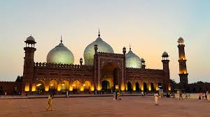
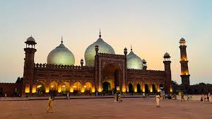

Badshahi Mosque
The Badshahi Mosque is an iconic Mughal-era congregational mosque in Lahore, Punjab, Pakistan. The mosque is located opposite of Lahore Fort in the outskirts of the Walled City and is widely considered to be one of Lahore's most iconic landmarks. The Badshahi Mosque was built between 1671 and 1673 by the Mughal emperor Aurangzeb. The mosque is an important example of Mughal architecture, with an exterior that is decorated with carved red sandstone with marble inlay. It remains the largest mosque of the Mughal-era, and is the third-largest mosque in Pakistan.Click For More Details

Murree
Murree is a mountain resort city, located in the Galyat region of the Pir Panjal Range, within the Murree District of Punjab, Pakistan. It forms the outskirts of the Islamabad-Rawalpindi metropolitan area, and is about 30 km (19 mi) northeast of Islamabad. It has average altitude of 2,291 metres (7,516 ft). The British built this town during their rule to escape the scorching heat in the plains of Punjab during the summer. Construction of the town was started in 1851 on the hill of Murree as a sanatorium for British troops. The permanent town of Murree was constructed in 1853 and the church was consecrated shortly thereafter. One main road was established, commonly referred to even in modern times, as the "Mall Road". Click For More Details

 

Khewra Salt Mine
The Khewra Salt Mine , also known as Mayo Salt Mine, is the world's second largest salt mine, located in Khewra, Punjab, Pakistan. The mine is in the Salt Range of the Potohar plateau, which rises from the Indus plain of the Punjab. The mine is famous for its production of pink Khewra salt, often marketed as Himalayan salt, and is a major tourist attraction, drawing up to 250,000 visitors a year. Its history dates back to its discovery by Alexander's troops in 326 BC, but it started trading in the Mughal era. The main tunnel at ground level was developed by H. Warth, a mining engineer, in 1872 during British rule. After independence, the BMR took possession until 1956 and then PIDC owned the mines till 1965. Click For More Details

Harapa
Harappa is an archaeological site in Pakistan, about 25 km (16 mi) north of Sahiwal. The Bronze Age Harappan civilisation, now more often called the Indus Valley Civilisation, is named after the site, which takes its name from a modern village near the former course of the Ravi River, which now runs 8 km (5.0 mi) to the north. The core of the Harappan civilisation extended over a large area, from Gujarat in the south, across Sindh and Rajasthan and extending into Punjab and Haryana. Numerous sites have been found outside the core area, including some as far east as Uttar Pradesh and as far west as Sutkagen-dor on the Makran coast of Balochistan, not far from Iran. Click For More Details